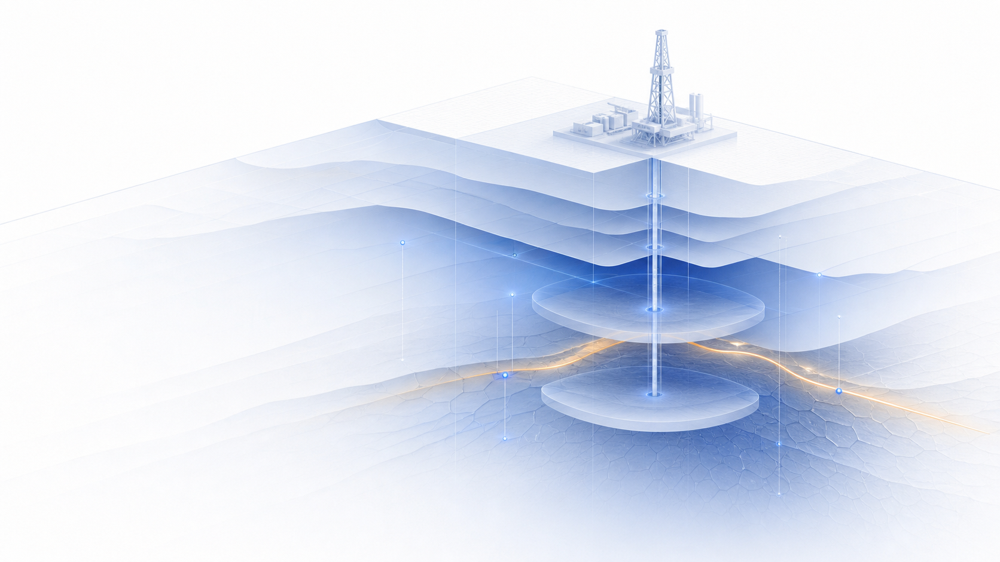

Physics-grounded barrier assurance
Know whether the barrier will work.
Before it has to.
Barrier Intelligence turns static Fire & Gas mapping into a defensible operating truth—every credible release, every wind, every relevant obstruction.
Explore the platform ↓
01 / OPERATING MODEL
The verification gap
Safety cases inherit assumptions.
Plants inherit reality.
A mapping study proves a detector layout once, against the scenarios it was told to consider. Process conditions move. Congestion grows. Winds change. The credited barrier does not automatically move with them.
The platform
From frozen mapping
to operational assurance.
01 / DESIGN
Assure3D
Replace the static, assumption-bound mapping study with a physics-grounded verification of the layout you actually intend to credit.
- Unlimited scenario and wind sweeps
- Voxel-by-voxel effective coverage
- Minimum-hardware optimisation
- Audit-ready assurance dossier
02 / OPERATIONS
AssureLive
Continuously test the credited barrier against the plant’s real process state, detector health, changing geometry and current weather.
- Live source-term and MDLS
- Detector health and inhibition state
- Dynamic evidence engine
- Second-by-second credit state
✦
A system that makes
barrier claims defensible.
From source evidence to physical detection vote, every step remains inspectable, reproducible and bound to the engineering basis.
01 / PHYSICS
Sweep the scenario space
Test credible releases through the real 3D environment—not an assumed spherical cloud.
02 / EVIDENCE
Trace every conclusion
Connect each verdict to its source document, page, extraction method and confidence state.
03 / CREDIT
Hold the credit wall
Physical detection votes decide the verdict. Evidence confidence can demote it—never lift it.
04 / LIVE
Keep the claim current
Carry the design basis forward as the process, weather, detector health and plant evolve.
What changes
Verification becomes repeatable.
Barrier credit becomes visible.
01
More scenario depth
Explore the space the manual study cannot practically run.
02
Less excess hardware
Optimise for effective coverage instead of compensating for uncertainty.
03
A stronger safety case
Show exactly why the barrier earns—or does not earn—the claimed credit.
Begin with one facility